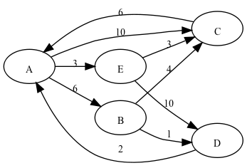

TDD is not finished until the code speaks
A problem, and solutions that don’t seem right
I recently asked a few people to solve a little programming problem. In this problem, a number of towns are connected by one-way roads that have different distances. The programmer must write code that answers questions such as:
- What is the distance of the path A-B-C-D?
- How many paths are there from A to C that are exactly 4 steps long?
- What is the distance of the shortest path from A to D?

I reviewed three different solutions; they were all valid, reasonably well written. Two had proper unit tests, while the third was checked by prints in a "main". The authors tried hard to write a "good" solution. There were no long methods; all the logic was broken down in small methods. And yet, I was not pleased with the results.
The common pattern in all three solution was the presence of an object named RouteFinder, or similar. Other objects were Town, or Path, but they were data structures with little behaviour; in other words, anemic objects. When I tried to understand the implementation logic, all I could see was loops, with many variations of the following:
private void calculateRoutesWithMaximumStops(Listroutes, int stops) { int stop = 0; while (stop < stops) { for (Route route : getUniqueRoutes(routes)) { routes.addAll(cloneRoute(route)); } stop++; } }
The problem is that this code does not speak about the problem domain. It's clear that the author took pains to extract methods, to reduce the complexity of the code; but in fact all he did was to decompose a procedure in subprocedures. That is not bad in itself; but the resulting code is not readable. Dude, where's my domain?
My solution
To me, readable code must speak about the domain. It must allow me to express the questions above directly in the code. Yes, I know this is a lofty goal, but how would I go about solving this problem, you may ask? Well, I did a bit of thinking on it, and I came up with the following.
Suppose we have an object that represents a set of paths. Let's call it a PathSet. I want to start with the set of 1-step paths.
PathSet oneStepPaths = new PathSet()
.withPath("A", "C", 10)
.withPath("B", "D", 1)
.withPath("C", "A", 6)
.withPath("D", "A", 2)
.withPath("E", "C", 3)
.withPath("D", "A", 2)
.withPath("E", "D", 10)
.withPath("B", "C", 4)
.withPath("A", "B", 6)
.withPath("A", "E", 3)
;
We can define an operation to restrict a PathSet by start or by destination:
PathSet startingFromA = oneStepPaths.from("A");
// [AC, AB, AE]
PathSet goingToC = oneStepPaths.to("C");
// [AC, EC, BC]
That was just looping through all the paths in the set, filtering all those that don't satisfy the property of "starting with A", or "ending with C". A more interesting operation is to take two paths into a longer one: for instance, composing "AB" (length 6) with BC (length 4), we get path ABC (length 10). This operation is only defined when the second path starts with the last town of the first path.
We can "lift" the composition of two paths to the composition of pathSets by taking all possible compositions of one path from the first set with a path from the second set:
PathSet twoStepPaths = oneStepPaths.compose(oneStepPaths); // [ABC, ABD, ACA, AEC, AED, BCA, BDA, CAB, ...
This composition can be iterated one more time to obtain the set of all three-steps paths. The next step (sorry) is to define a generalized operation to compose a set with itself n times.
PathSet fourStepPaths = oneStepPaths.exp(4); // same as oneStepPaths.compose(oneStepPaths).compose(oneStepPaths) // .compose(oneStepPaths); // [ABCAB, ABCAC, ..., EDAEC, EDAED]
Now it's easy to answer the question "how many paths of 4 steps are there from A to C:
PathSet fourStepTripsFrom_A_to_C = oneStepPaths.exp(4).from("A").to("C");
To answer questions about the shortest path, we need to define another operation, that takes the union of two PathSets. This will be the subject of another story.
Discussion
It seems to me this is a key characteristic of a good object-oriented domain: it defines objects that can be composed together in various ways, to express questions or statements about the problem domain.
They say a domain model should be rich, in the sense that objects should have behaviour attached to them. We should avoid service objects that contain all the behaviour (those are usually called something like FooHandler or FooManager), and anemic objects with data but no behaviour. I think this guidance is correct, but it's not enough; the mark of a successful domain model is when you can compose objects together in useful ways. I would call that an expressive domain model.
Eric Evans led a renaissance of true object-oriented thinking with his book Domain Driven Design. This book recalled the programmer's attention on the key importance of objects as a way to model the problem domain. Too much attention is wasted on infrastructure, which also benefits from being programmed with objects, but should not be the central focus of development.
So Evans' book manages to set an important goal in front of the developers; but I think it does not give enough guidance on how to reach it. It's interesting to look into the example library that Evans developed; it's the "Time and Money" library. This library allows the developer to express in code things like "'thanksgiving' is celebrated on the fourth Thursday in November; when is the next occurrence?".
public void testDeriveThanksgiving() {
//Calculate Thanksgiving, the 4th Thursday in November, for the
// year 2005
DateSpecification thanksgiving
= DateSpecification.nthOccuranceOfWeekdayInMonth(
11, Calendar.THURSDAY, 4);
// With the specification, you can do checks like
assertTrue(thanksgiving.isSatisfiedBy(CalendarDate.date(2005, 11, 24)));
assertFalse(thanksgiving.isSatisfiedBy(CalendarDate.date(2005, 11, 25)));
// Derive the date(s) for an interval
assertEquals(CalendarDate.date(2005, 11, 24),
thanksgiving.firstOccurrenceIn(CalendarInterval.year(2005)));
...
}
This code shows the same kind of expressiveness that I think is the mark of a good object-oriented domain.
This library deals with a kind of subject (calendar and dates) that is relevant for, I think, the majority of applications. Yet few calendrical APIs are as expressive as this one. Why is it so? The current thinking in agile circles is that you get to a good design incrementally, by applying TDD and refactoring. The value of TDD is that it helps you to stop and think about your code. Thinking is certainly a valuable thing. But it's not enough to sit and ponder, if you don't know where to direct your thoughts. If you don't have a rich enough vocabulary of design elements in your head that you can mull over.
In fact, TDD could be a crutch that allows you to give up finding a good design and settle for a mediocre one. The tests make sure your code does what it needs to do. You apply some refactoring, removing the obvious smells. Then you can move on and code the next feature. Don't get me wrong: I have the highest regard for code that works; and it's even more impressive when it does not show common smells like "long method" and "bad choice of names".
But it may be not enough. I want my code (and my team) to be great. I want my velocity to increase over time, as long as the kind of features that the customer wants are similar to old ones. This can only happen if the concepts I built into the domain enable me to code up features in less code; this is when my domain model evolves toward a domain specific language that talks about the problem domain.
How do I get there?
This is all good, you will say, but how do I do that? Where is the inspiration, the examples, the procedure I should follow, the book I should read? I don't know. For the moment, let me explain the thinking that went into my solution of the problem above.
You know that functions are a very important idea in mathematics. A function is a correspondence between elements of a set (the domain) to elements of another set (the range). For instance, this is how we say that f is a function from domain X to range Y
f: X → Y
The key property of a function is that for every input, there is exactly one output; given x in X, you get f(x), which exists and is unique. If you relax the restriction that f(x) exists and is unique, what you get is a binary relation. A binary relation associates any element of the domain with zero, one, or more than one elements of the range.
We can view it as a set of pairs (x,y) where x is in X and y is in Y. We say that a relation is a subset of the cartesian product of X and Y.
R ⊆ X × Y
If (x,y) is in R, we write x(R)y or even xRy for short. We can't use the f(x) notation anymore, because it implies that f transforms x in some unique element.
Now binary relations are a very useful thing to know, because they come up in many different problems. For instance, our PathSet looks a lot like a binary relation: it tells me which towns are reachable from any given town.
And binary relations are nice because they come with a number of useful operations. Relational composition, for instance. When I compose two relations R and S what I get is a new relation R∘S. Now, if you want to know if x(R∘S)y, you must find some intermediate element z such that xRz and zSy. If there is one, then it's true that x(R∘S)y.
This composition operation is very similar to the composition that we defined above: remember, the operation returned the PathSet with all the paths that could be composed, that is the paths where the destination town of the first is the same as the start town of the second. There are many other useful operations defined on relations: two other operations that I used are domain restriction and range restriction, which are called "from" and "to" above.
The PathSet is a bit more complex than a binary relation, because every element has a numeric distance associated. But it's easy to extend the definition of relational composition to take care of that. We just say that the distance of each composed path is the sum of the distances of the two paths it's composed from.
So this is what I was thinking while I was designing the code to solve this problem right. I remembered that whenever you have something that looks like a graph, you can see it as a binary relation. The advantage of seeing it that way is that relations have a language of standard operations. This language is what I was looking for: some way to define an expressive language for the problem domain.
Conclusion
When I was a Ph.D. student, I spent a lot of time learning and doing mathematics for program construction. The idea was to calculate programs from specifications, much like we calculate the solution for an equation. When I got back to working as a professional programmer, I found I could not use much of what I learned. It was too complicated, too difficult. It's true that all the things I learned made me a better programmer, but that is mostly because I learned and a greater sense of beauty, precision and economy in programming.
Lately I found that while the proof techniques I used were too cumbersome, the language of mathematics itself could be a what is needed to write domain models that are really expressive. A key ingredient for me is that the domain objects should be composable with useful operations. Extracting methods and giving them a nice name is good, but it's not enough if the method I get is not a generally useful operation.
Stay tuned, let's see where this train of thought leads. For the moment, gentle reader, your comments are most welcome.
References
An easy introduction to binary relations is in chapter 7 of Using Z by Woodcock and Davies.
April 28th, 2009 at 14:57
Update: thanks to Marco (marc_lorux) for pointing out an error.
April 28th, 2009 at 14:59
Hi Matteo,
It’s interesting to note that in Domain Driven Design tests are useful tools not only to validate application behavior, but also to validate code readability. A common DDD practice is to start an exploratory coding session writing tests with no attention to the existing code: the idea is to “Write the code that you would like to have”, in a language that is clearly readable by developers and domain experts. Put in this way …assertions might be optional (and thus the word “test” would be misleading). We’re basically testing the expressiveness of the code.
Making the code actually work is a different job. Sometimes it’s easily achievable, sometimes it’s harder. But decoupling from the existing code is often necessary to get closer to the domain.
April 28th, 2009 at 15:52
[…] di Milano, Matteo Vaccari ha parlato brevissimamente dell’argomento, ed è stato illuminante. Da qui il suo interessante post. In particolare una frase pesa come un macigno su quanti, come me, pensano di essere agili solo […]
April 29th, 2009 at 15:26
Thank you for the post, I enjoyed it.
Speaking code do a good job as long as we need to share and improve knoweledge about the domain.
Otherwise an alternative “legitimate” option is to pick up already existing code, no matter if it doesn’t “speak”.
May 4th, 2009 at 20:30
[…] e design scadente Posted in Vari by acerisara on 4 Maggio 2009 Grande post. E’ da qualche mese ormai che studio ed applico seriamente questa tecnica di sviluppo (con […]
May 21st, 2009 at 12:47
[…] I saw this post by Matteo Vaccari about code that should speak, I immediately though about a similar situation I […]
July 3rd, 2009 at 12:48
[…] ricerca virtuosa, a cui e’ dedicato DDD e esemplificata in questo post di Matteo, e’ l’estremo opposto del fenomeno pernicioso che ho descritto in questo post, che […]
July 27th, 2009 at 20:27
[…] Mi sono finalmente deciso a leggere Domain Driven Design di Evans. I due recenti post di Carlo e M. Vaccari sono stati l’ input necessario per colmare la lacuna (non l’ ho ancora assimilato, ci […]
September 1st, 2009 at 09:22
[…] il piacere di essere invitato al Bergamo XP User Group per raccontare il materiale del mio post sul codice parlante. La serata è questo giovedì 3 settembre, e il luogo è (pare) la sede di Softcare a Torre […]
October 29th, 2009 at 09:32
[…] higher level of criticism for code. What I learned resonates with what I wrote earlier about “code that speaks.” It turns out I was on the right track there; the goal is to have code like Lego bricks; […]
February 24th, 2010 at 16:58
[…] code in the Hand class was still not good enough. It was full of loops. There was no flash of insight here, we just applied a few “extract method”s that moved […]